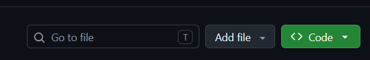
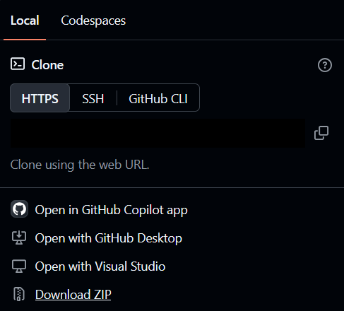
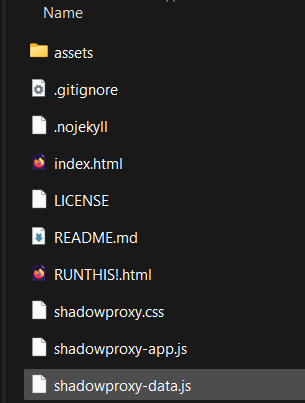

01
Click Code
On the GitHub repository, open the Code menu.

Download guide
Use the hosted app for server routing. You can download the source from GitHub, but the HTML file alone cannot route pages.
On the GitHub repository, open the Code menu.

Choose Download ZIP. Wait for the download, then extract the ZIP.

Inside the extracted folder, double-click RUNTHIS!.html.
